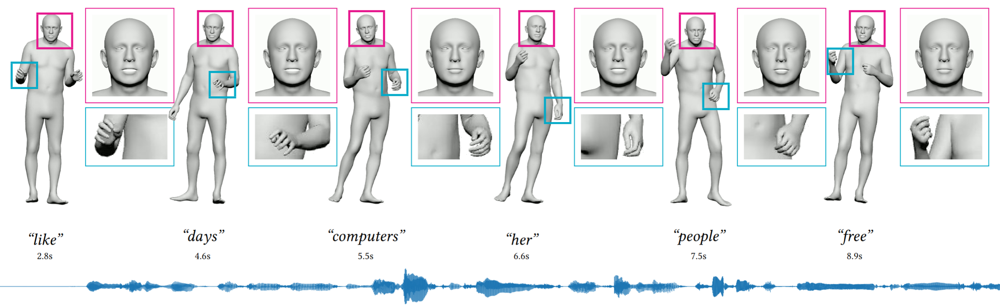

Structured latent space
A continuous three-stream representation separately models upper-body, lower-body, and expression dynamics.
SIGGRAPH Asia 2026
Institution / University

Holistic co-speech motion generation aims to synthesize coordinated facial expressions, hand gestures, and body movements from speech, which is challenging due to heterogeneous part-specific dynamics, long-range temporal coherence, and cross-part coordination. Directly modeling high-dimensional motion can be unstable, while overly compact or unstructured latent spaces may lose fine-grained motion details.
We present TalkFlow, a structured latent flow framework for speech-driven holistic motion generation. TalkFlow learns a continuous three-stream latent representation for upper-body motion, lower-body motion, and facial expressions, preserving part-specific dynamics without forcing heterogeneous motion components into a single latent space. Lightweight cross-stream interactions maintain holistic coordination during both latent representation learning and flow-based generation.
Conditioned on multi-level speech features, TalkFlow performs speech-conditioned latent flow matching and learns a continuous transport process from source latents to realistic motion latents. Experiments on BEAT2 demonstrate strong facial fidelity, competitive body-motion quality, and effective speech-motion synchronization.
A continuous three-stream representation separately models upper-body, lower-body, and expression dynamics.
Lightweight FiLM-gated interactions coordinate heterogeneous motion streams while preserving part-specific behavior.
Branch-specific speech conditions guide efficient continuous transport in the learned motion latent space.
Video results will be released with the public project page. We plan to include benchmark comparisons, in-the-wild speech, long-sequence generation, and samples generated from different Gaussian source latents.
@inproceedings{talkflow2026,
title = {TalkFlow: Structured Latent Flow Matching for
Speech-Driven Holistic Motion Generation},
author = {Author One and Author Two and Author Three},
booktitle = {ACM SIGGRAPH Asia Conference Papers},
year = {2026}
}